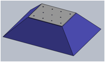
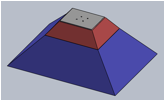
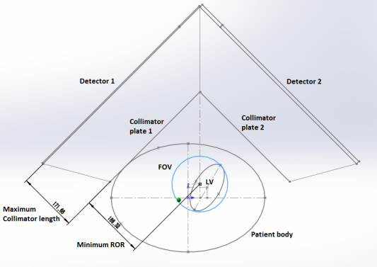
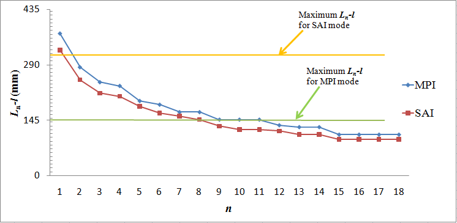
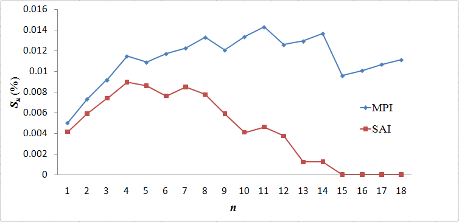
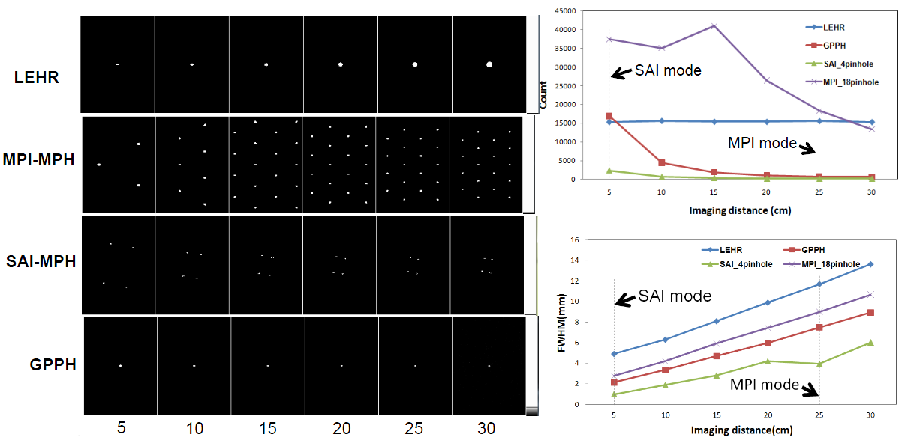
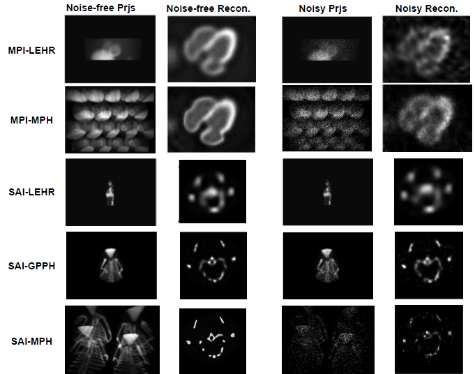

Adaptive Multi-pinhole SPECT for Improved Clinical Myocardial Perfusion Imaging and Preclinical Rodent Imaging
Pinhole SPECT provides better between resolution and detection efficiency trade-off as compared to parallel-hole collimator for imaging small field-of-view. We have designed a dual-purpose multi-pinhole (MPH) collimator (Figure 1) for improved clinical myocardial perfusion imaging (MPI) with extra capability of small animal imaging (SAI) for a clinical gamma camera. However, the standard configuration for clinical MPI on a dual-head scanner is usually L mode with two detectors ~90⁰ apart. Thus, we also aim to design a dual-head L mode MPH collimator for potential stationary MPI based on the same scanner (Figure 2).
Theoretical calculation based on work from Nillius and Danielsson (2010) was conducted to optimize the system parameters by maximizing the detection efficiency based on the pre-determined target resolution and field-of-view (Figure 3). We performed analytical and Monte Carlo simulations (GATE) with point source and digital phantoms to evaluate the imaging performance of MPH-MPI and MPH-SAI as compared to conventional low energy high resolution (LEHR) and general purpose pinhole (GPPH) (Figure 4 & 5).
The FWHM were 8.21 mm and 1.24 mm for the MPI-MPH and SAI-MPH modes when imaging distance were 22 cm and 5 cm, respectively, showing ~23 % and 74.8 % improvement as compared to LEHR. The detection efficiency improvement was ~58.6 % as compared to LEHR for the MPI-MPH. The new collimator provides a significant improvement in resolution and detection efficiency trade-off as compared to current MPI using LEHR with extra capability for SAI.
|  |
| (a) |
|  |
| (b) |
| Figure 1. Dual-purpose multi-pinhole (MPH) collimator for (a) MPI & (b) SAI. |
|  |
| Figure 2. Dual-head L mode (MPH) design with the smallest possible radius-of-rotation. |
|  |
| (a) |
|  |
| (b) |
| Figure 3. (a) Theoretical detection efficiency plotted as a function of number of pinholes (n). (b) Collimator length (Ln-l) plotted as a function of n. |
|  |
| Figure 4. (a) Point source projection data for different collimators with different imaging distances. (b) Detected counts and (c) FWHM plotted as a function of imaging distance for different collimators |
|  |
| Figure 5. Noise-free and noise projection data and reconstructed images from XCAT and MOBY phantom with different collimators. |